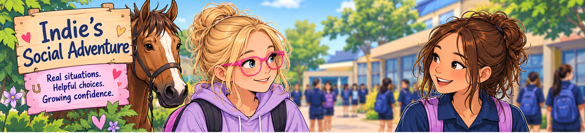
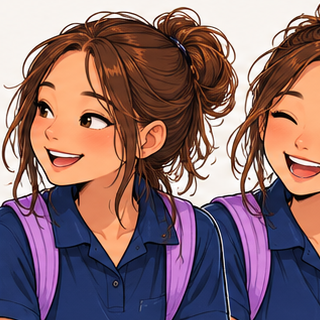
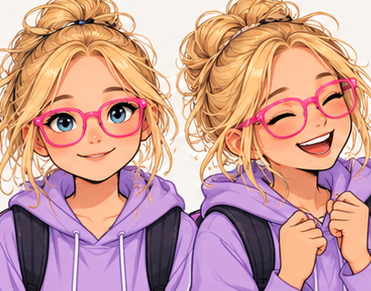
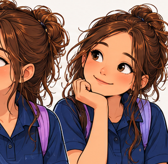

The Hello Moment 💗
A new friend at school
Indie is at school. Taylor sees her in the corridor and comes over to say hello.

In this story, you can listen, choose what happens next, and explore feelings. There are no wrong answers.
It's okay to take your time, be quiet, or try again.
Taylor says hello

Taylor
IndieShort, gentle illustrated movement. You can replay or skip it. This is not yet a full character-animation video.
Indie's choice
Taylor has said hello. What might Indie do? Choose any option to explore what happens.
What happens next?
Short, gentle illustrated movement. You can replay or skip it. This is not yet a full character-animation video.
How might Taylor feel?
Faces, words and voices can give us clues. But we can't know for sure just by looking.

What's happening inside me? 💗
Sometimes talking feels tricky. What might Indie be feeling? Explore as many as you like.
Feelings can be mixed up. Body clues are different for everyone. You can say “I'm not sure”, take a break, or talk to someone you trust.
Well done for exploring! 🌟
There's no perfect way to say hello. A wave, a few words, a break, or trying another day can all be okay.
You can be yourself and still make connections. 💗
Hello Hero!
You earned a badge for exploring the story and your feelings. Every choice counts!
Listening controls 🎧
Audio uses your device's available voices. Natural prerecorded Australian character voices aren't included yet. Word highlighting is synchronised where the device supports speech boundaries, otherwise approximate.
No scores · No timers · No forced eye contact · You can always take a break